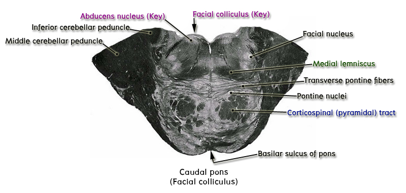

ระดับ caudal part of pons หรือระดับ facial colliculus

Key structure ของระดับนี้ที่ต้องชี้แสดงคือ abducens nuclei เห็นเป็น area ใส ๆ ซึ่งอยู่ deep กว่า facial colliculus ซึ่งเป็นเนินนูนที่ผิวทางด้าน posterior surface ของ pons บริเวณ 2 ข้างของแนว midline และ superficial กว่า abducens nuclei ให้ชี้แสดง internal genu of intramedullary root fibers of facial nerve (ทำให้เนินนูนนี้มีชื่อเรียกว่า facial colliculus) จากนั้นให้ชี้แสดง intramedullary root fibers of facial nerve ที่ทอดผ่าน tegmentum of pons ไปผ่านใน lateral part of basal part of pons และออกจาก brainstem บริเวณ lateral end ของ pontomedullary sulcus
ทางด้านหน้าของ abducens nuclei ให้ชี้แสดง intramedullary root fibers of abducens nerve ที่ทอดมาทาง anterior ออกจาก brainstem ใน pontomedullary sulcus บริเวณที่ตัดกับ rostral end of preolivary sulcus
เมื่อพิจารณาดู brainstem ระดับนี้ ให้ชี้แสดง basilar part ซึ่งเป็นส่วน anterior half ของ section ซึ่งประกอบด้วย pontine nuclei, gray matter, white matter, large circular bundles of descending fibers และ smaller bundles of transverse fibers ซึ่งวิ่งไปทางด้าน lateral เพื่อเข้าสู่ cerebellum ผ่านทาง middle cerebellar peduncle ทั้งสองข้าง ให้ชี้แสดง middle cerebellar peduncle ซึ่งเป็นกลุ่มของ nerve fibers ขนาดใหญ่ บริเวณ lateral part ของ section
Posterior half ของ section เรียกว่า tegmentum of pons ซึ่งต่อตรงขึ้นมาจาก tegmentum ของ medulla ที่บริเวณ posterolateral part ของ tegmentum ของ pons ระดับนี้ให้ชี้แสดง spinal trigeminal nucleus และ spinal trigeminal tract ซึ่งอยู่ lateral กว่า intramedullary roots ของ facial nerve
บริเวณ anterior part ของ tegmentum ซึ่งอยู่ just dorsal กว่า basilar part ให้ชี้แสดง medial lemniscus ซึ่งเริ่มเลื่อนตัวลงมาทอดอยู่ในแนวนอน